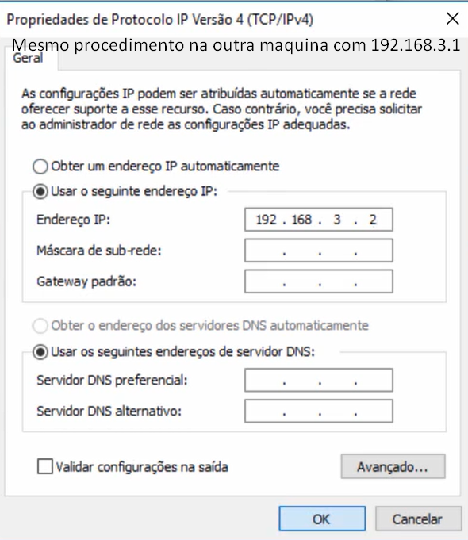
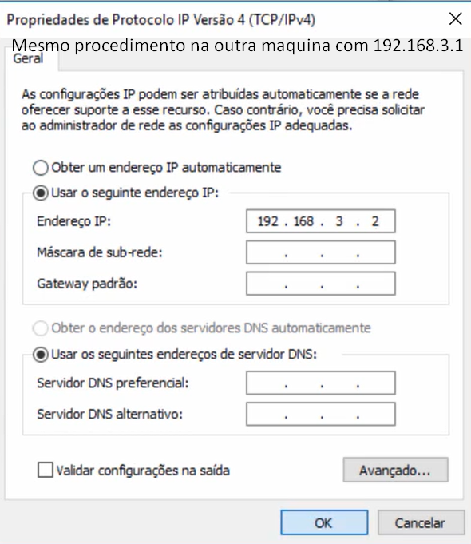
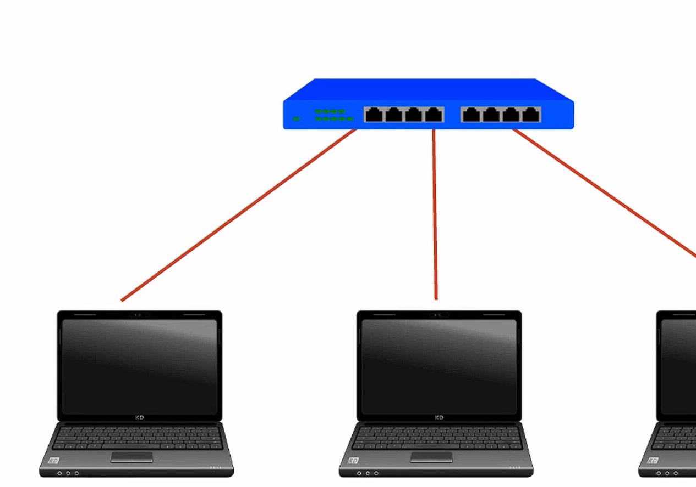
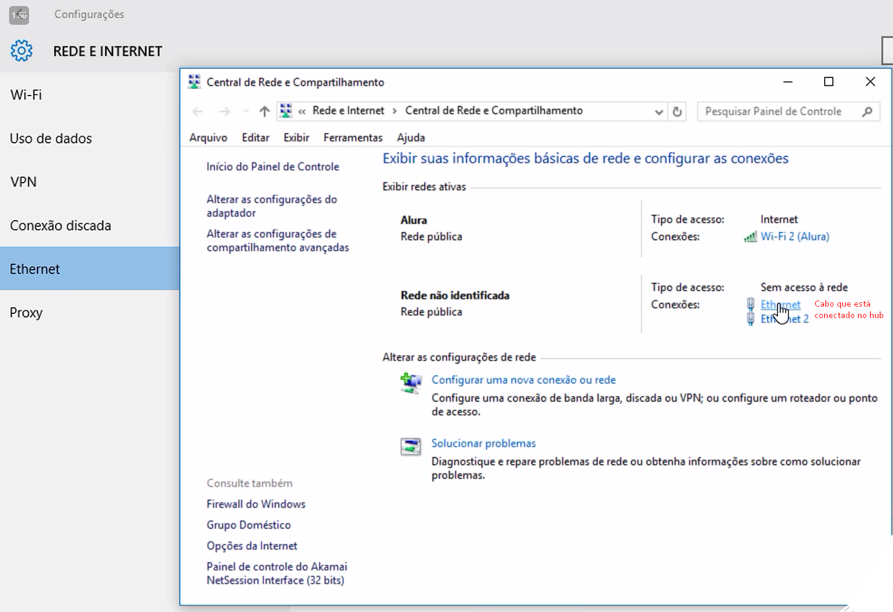
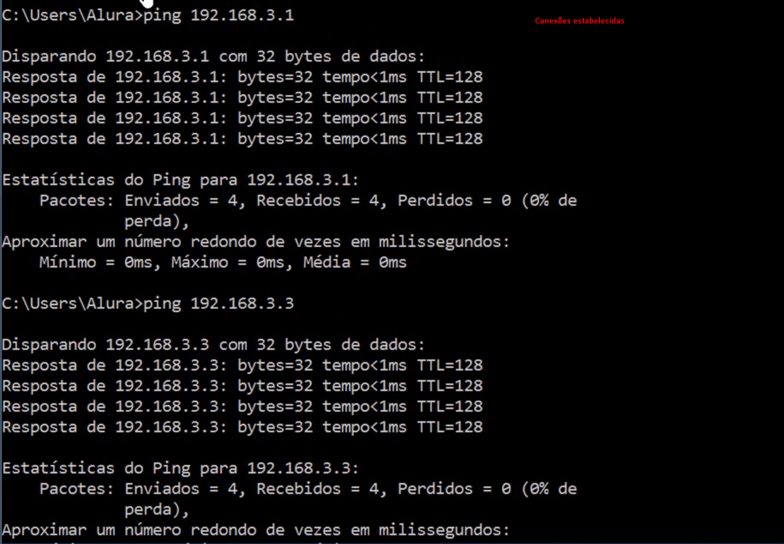
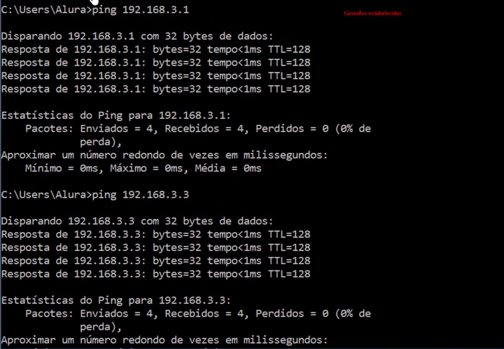
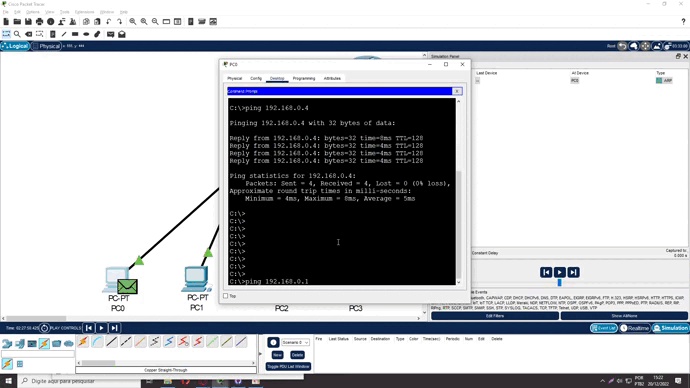
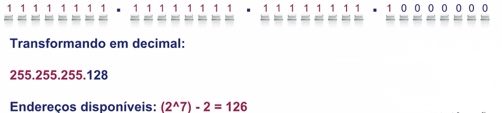
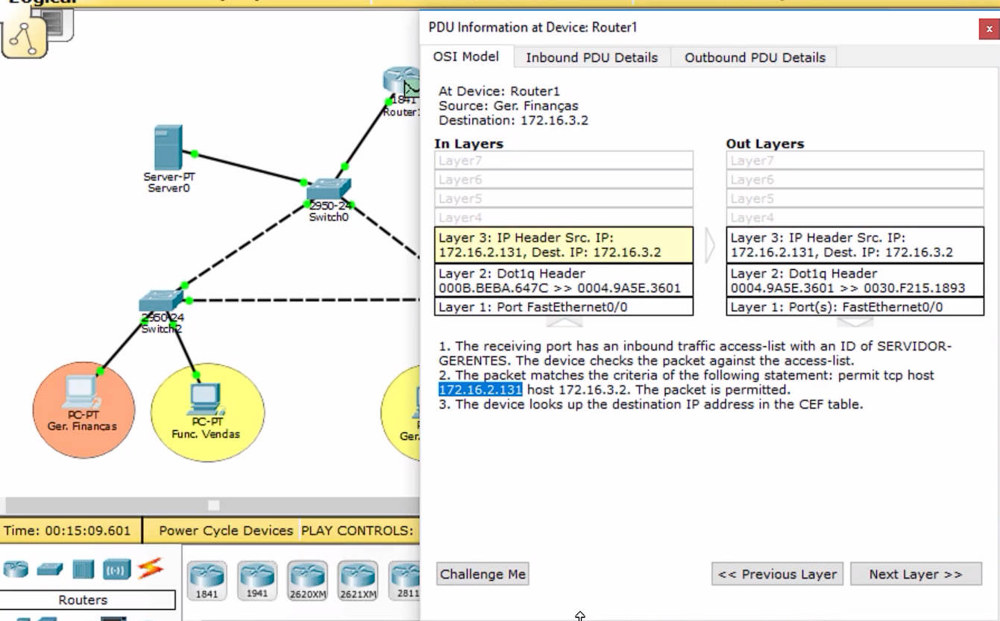

Parte 1
Definições:
-
IP (Internet Protocol)
- Definição - endereço exclusivo que identifica um dispositivo na Internet ou em uma rede
local.
- IPv4 - identificação
da máquina
- Ping - verifica
comunicação
- ICMP (Internet Control Message Protocol) - Dentro da ferramenta administrativa do ping temos o protocolo ICMP, sendo ele o
responsável por mandar uma requisição (Echo Request) para máquina remota e
esperar um retorno dessa máquina remota (Echo Reply).
(ICMP é como se fosse um telefonema para ver se o outro computador tem
comunicação 🙂)
- RTT (Round Trip Time) = Tempo
de ida e volta da informação
- TTL (Time To Leave) - indica
por quantas máquinas (hops) minha informação pode passar antes de ser
extinta
- ARP - O protocolo ARP, permite encontrar o
endereço físico a partir do endereço IP da máquina alvo. Para tal, o
protocolo usa um mecanismo de difusão (broadcast) na rede local, enviando uma
solicitação a todas as máquinas da rede, sendo que a máquina alvo responde
indicando o par endereço IP/endereço físico.
-
DNS
- definição - faz
tradução de nome para endereçamento ip de identificação na
máquina
- nslookup - Verificar
traduções de nomes de domínios e endereços IP e isolar problemas entre as
duas partes
- resposta não autoritativa -Uma vez que eu já acessei o site
antes, essa máquina guarda em sua memória, para não ter que ficar fazendo essas
requisições na internet o tempo todo. Dessa forma, a minha máquina que respondeu
não tem autoridade sobre esse domínio, não é minha máquina que possui
o registro
Bônus 🙂: O ipconfig seria usado para ver as
configurações de IP de minha máquina e o nslookup seria para verificarmos recursos mais avançados de problemas
que podemos ter entre a url e o endereço IP.
- Trace routes - verifica a rota que a minha
informação levou para chegar até a máquina de destino
(*) - Indica que o administrador dessa máquina desabilitou a resposta ao
nosso chamado
-
DHCP
- Definição - Os
servidores DHCP (Dynamic Host Configuration Protocol) alocam dinamicamente endereços IPs a
clientes (máquinas).
- Configurando
Comunicação entre duas redes:
-
Conectar 2 computadores pelo cabo de
rede:
 

-
Testando conectividade da placa de
rede:
Ip reservado da placa de rede, usado para testar se os protocolos TCP/IP estão
funcionando. Ele é conhecido como endereço de loopback, pois o sinal é enviado e
recebido por ele mesmo.
! Endereços IP que começam com 127 são reservados para
endereços de loopback
Vamos fazer agora a tradução do endereço IP de
loopback para a url www.cursoderedesdaalura.com:
- Caso seja Windows: Abrir bloco de notas como
administrador e abrir o arquivo hosts localizado em C:\Windows\System32\drivers\etc e insira na
última linha o mapeamento 127.0.0.1 www.cursoderedesdaalura.com e teste o ping para essa url
- Caso seja Mac: Abrir o terminal e digitar: sudo vi
/private/etc/hosts e posteriormente ir com a seta para baixo até ir numa linha em branco e
realizar o mapeamento 127.0.0.1 www.cursoderedesdaalura.com pressione x, caso ele pergunte se deseja salvar diga que sim. Posteriormente teste o
ping para essa url
- Caso seja Linux: Abrir o terminal e digitar: sudo vim
/etc/hosts e posteriormente ir com a seta para baixo até ir numa linha em branco e realizar o
mapeamento 127.0.0.1 www.cursoderedesdaalura.com pressione :wq para salvar e sair. Posteriormente teste o ping para essa url
-
Ethernet HUBS


 

Bônus 🙂 :
- O Hub é um equipamento utilizado para
interconectar diversos dispositivos finais.
- NAT é um método de tradução
de endereços privados e públicos.
- Servidor é uma máquina centralizada que
oferece serviços a um cliente (ex: computador)
- Máscara de rede é usado para determinar
se dois equipamentos estão na mesma rede
- Tipos de cabos
-
Conector RJ-45 - Desenvolvido pela TIA
(Telecommunications Industry Association).
-
Padrão T568A
A placa de rede transmite na posição 1 e 2, recebe na
posição 3 e 6. O hub tem os sinais invertidos.
-
Padrão T568B -
O cabo inverte a ordem de transmissão e recepção comparado
ao T568A
Bônus 🙂 : Algumas placas de rede possuem um padrão auto-MDIX que é capaz de detectar que
colocamos um cabo “errado”, mas consegue realizar a correção das polaridades via
software
O tipo de cabo a ser usado geralmente pode ser definido com a pergunta:
Os equipamentos são iguais?
- se sim: cabo cruzado
- se não: cabo direto.
- Simulando conexões com Packet
Tracer
Seria inviável ficar manipulando 3, 5 ou mais computadores para fazer
testes de rede durante o estudo, para isso existe a ferramenta Packet Tracer que pode ser usada para simular
conexões.
Ela pode ser baixada através deste link.
-
Aparelhos de Rede
O Hub Switch e Roteador têm como objetivo interconectar redes encaminhando
seus pacotes de dados, os Switches e hubs são usados somente para conexão na minha rede
local.
-
Hub:
-
Simulando Rede
- Passo a Passo criando uma rede com 3 dispositivos e 1
hub:
- Acesse o Packet Tracer
- No canto inferior esquerdo, clique em End Devices e arraste o
computador para a área de trabalho. Faça isso ao todo 3 vezes;
- Posteriormente, clique no ícone Network Devices > Hubs e
arraste o objeto para área de trabalho;
- Clique no ícone Connections, selecione Copper
straight-through (Cabo direto), normalmente a terceira opção, e faça a
conexão na porta FastEthernet dos computadores com o Hub;
- Clique em cada um dos computadores -> aba Desktop -> IP
Configuration. Atribua um IP para cada computador: 192.168.3.1, 192.168.3.2 e 192.168.3.3
- Na aba Desktop, selecione Command prompt e escreva ping
(#endereço IP de um dos outros dois computadores#). Cada computador deverá conseguir
realizar o ping dos outros dois!
- Então, clique na opção de
simulação, abra o Command prompt e digite novamente ping (#endereço IP de um dos
outros dois computadores#) e depois vá clicando no botão Capture/Forward para verificar
como a informação vai passando.
-
Limitações do Hub
Os hubs não conseguem aprender onde está localizado cada
máquina, dessa forma, ele repassa a informação para todas as demais máquinas
conectadas (broadcast). Isso quer dizer que caso ocorra um fluxo intenso de tráfego na rede, teremos
essa informação sendo encaminhada para todos os demais usuários causando
lentidão na rede. Além disso, quando usuários mandam a informação
destinada para um usuário específico, os demais usuários recebem essa
informação, causando assim uma vulnerabilidade de segurança.
Definições ICMP e
ARP
-
Switcher
-
Simulando Rede
- Passo a Passo criando uma rede com 3 dispositivos e 1
Switcher:
- Acesse o Packet Tracer
- No canto inferior esquerdo, clique em End Devices e arraste
o computador para a área de trabalho. Faça isso ao todo 3 vezes;
- Posteriormente, clique no ícone Network Devices >
Switches e arraste o objeto para área de trabalho;
- Clique no ícone Connections, selecione Copper
straight-through (Cabo direto), normalmente a terceira opção, e faça a
conexão na porta FastEthernet dos computadores com o Switcher;
- O Switcher leva alguns segundos para habilitar a porta de
comunicação
- Clique em cada um dos computadores -> aba Desktop ->
IP Configuration. Atribua um IP para cada computador: 192.168.3.1, 192.168.3.2 e 192.168.3.3
- Na aba Desktop, selecione Command prompt e escreva ping
(#endereço IP de um dos outros dois computadores#). Cada computador deverá conseguir
realizar o ping dos outros dois!
- Então, clique na opção de
simulação, abra o Command prompt e digite novamente ping (#endereço IP de um dos
outros dois
-
Diferencial do Switcher
- A diferença do Switcher para o Hub é que ele consegue
armazenar o endereçamento MAC das máquinas de origem e destino em memória
após serem identificadas, fazendo assim com que não ocorra o broadcast das
informações para todas as máquinas no sistema.
Informações do switcher no momento do broadcast ARP
Bônus 🙂:Uma vulnerabilidade do Switcher que
indivíduos mal intencionados podem utilizar é lotar o switcher com endereçamentos
falsos, forçando o mesmo a fazer broadcast de suas informações.
Uma maneira de se proteger desse ataque é limitar a quantidade de
endereços que podem ser acessados para cada porta do switch.
-
Roteadores
-
Simulando Rede
- Passo a Passo criando uma rede com 3 dispositivos e 1
Roteador:
- Acesse o Packet Tracer
- No canto inferior esquerdo, clique em End Devices e arraste
o computador para a área de trabalho. Faça isso ao todo 3 vezes;
- Posteriormente, clique no ícone Network Devices >
Roteador e arraste o objeto para área de trabalho;
- Clique no ícone Connections, selecione Copper
cross-over (Cabo cruzado), normalmente a quarta opção, e faça a conexão na
porta FastEthernet de 2 dos computadores com o Roteador;
- O terceiro computador vai ser conectado com um cabo do tipo
Console (Serial) - que é específico dos roteadores Cisco - na porta RS-232 ligando na
porta console do roteador.
- Essa máquina vai utilizar um programa terminal para poder
acessar o roteador (exemplo: putty, speed dial)
- Clique em cada um dos computadores -> aba Desktop ->
IP Configuration. Atribua um IP para cada computador: 191.168.3.1, 192.168.3.2 e 193.168.3.3
(ips diferentes)
-
Habilitando Portas
- Clique duas vezes no roteador e vá para a aba
CLI:
- NO > enter x2
- ? (Mostra configurações disponíveis no modo de
usuário atual)
- enable
- ?
- configure terminal (modo de operação para configurar
roteador)
- interface fastEthernet 0/0
(<port_name><port_number>) (modo de operação da interface)
- no shutdown (habilita a interface)
- exit (volta para o último nível de privilégio)
- interface fastEthernet 0/1
- no shutdown
- ip address 192.168.3.10 255.255.255.0 (método
estático, não pode ser um host já utilizado na rede, após o endereço
vem a máscara)
- Ctrl + z
Verificando conexão
- Ping 192.168.3.1
- repete para quantas interfaces forem necessárias
(ip da
máquina 2: 191.168.3.12)
-
Comunicação entre redes
diferentes
- A comunicação nesse tipo de situação
precisará ocorrer através do gateway do roteador, pois por estarem em redes diferentes as
máquinas não terão comunicação mesmo que estejam conectadas por um
cabo ethernet
- Visualizando diferentes interfaces ip no roteador
- Digite no terminal CLI do roteador
- enable
- show ip interface brief
- Configurando Gateway de computadores com
informações do roteador
- Acesse a maquina de ip 192.168.3.2
- Vá em Desktop
- IP Configuration
- Coloque o default Gateway como 192.168.3.10
- Acesse a maquina de ip 191.168.3.1
- Vá em Desktop
- IP Configuration
- Coloque o default Gateway como 191.168.3.12
- Testando comunicação entre rotas
Agora a comunicação entre as portas está estabelecida
permitindo que testamos ela. 👏
- Acesse a maquina de ip 192.168.3.2
- Vá em Desktop
- Command Prompt
- Digite os comandos:
Bônus 🙂 : Para identificar o gateway padrão do roteador da sua casa basta ir no
cmd e digitar ipconfig. Colocando esse endereço no google você tem acesso as
configurações da sua rede.
-
Conexão com DHCP
Considerando um cenário mais próximo da realidade em que temos
vários computadores, um switcher e 1 roteador fazendo a conexão entre eles. Seria muito
desgastante configurar os endereços ip manualmente, por isso vamos simular agora no packet tracer uma
simulação utilizando o DHCP.
-
Simulando Rede
- Acessando o packet tracer crie um cenário com 3 computadores,
1 switcher e 1 roteador.
- Os computadores estão ligados ao switcher por cabos Copper
Straight-Throught
- o switcher estará conectando sua porta Fast Ethernet à porta
FastEthernet 0/0 do Roteador pelo cabo Copper Straight-Throught
-
Configurando DHCP
Acesse o roteador e vá até a aba CLI
-
Habilitando Rota
- NO > enter x2
- ? (Mostra configurações disponíveis no modo
de usuário atual)
- enable
- ?
- configure terminal (modo de operação para
configurar roteador)
- interface fastEthernet 0/0
(<port_name><port_number>) (modo de operação da interface)
- no shutdown (habilita a interface)
-
Cria Pull com ips DHCP e seta
máscara de rede
- exit (sai da interface e entra em configuração do
roteador)
- ip dhcp pool REDENOME (cria pull de endereços IPs)
- ? (é necessário especificar a máscara de
rede que será usada nesse pull - Utilizaremos o 192.168.0.0 255.255.255.0)
- network 192.168.0.0 255.255.255.0
-
Sentando gateway default dos
computadores
- default-router 192.168.0.1
-
Definindo endereço ip da porta do
roteador
- exit
- interface fastEthernet 0/0
- ip address 192.168.0.1 255.255.255.0
-
Verificando conexão.
- Acesse uma das máquinas
- Vá em desktop
- Acesse IP Configuration
- Altere de Static para DHCP
- Repita o processo para todas as máquinas
Agora a comunicação entre as portas está estabelecida
permitindo que testamos ela. 👏
Bônus 🙂: Quando um endereço IP
é atribuído a uma máquina (cliente), dizemos que a configuração foi
dinamicamente alocada. Os servidores DHCP normalmente possuem o que chamamos de “lease time”, ou
seja, possui um tempo de alocação de um endereço IP a uma máquina, quando esse
tempo é expirado é preciso ocorrer uma renovação de endereço IP. Por isso
ele é dinamicamente alocado
Bônus 2 🙂: Quando um cliente não
possui endereço IP ele não sabe a quem perguntar, então ele precisa sair perguntando
para todo mundo que está na mesma rede quem poderá fornecer um endereço IP. Quando essa
comunicação é feita para todos os dispositivos, chamamos isso de Broadcast.

-
Acessando uma página Web
Agora que realizamos conexões com roteadores e dhcps a próxima
etapa é se conectar com um site na web. Para fazermos isso em uma simulação iremos
criar um servidor chamado google e realizar a conexão desse servidor com nosso roteador.
-
Adicionando Servidor
- Continuando de onde paramos no último tópico iremos ir
no packet tracer
- Ir em End Devices no canto inferior esquerdo
- Adicionar no mapa o servidor (geralmente a 3°
opção)
- Ir em Network Devices
- Adicionar um switcher
- Adicionar um Copper Straight-Through (conexão direta) entre o
servidor e o switcher nas portas Fast-Ethernet
- Fazer o mesmo com o switcher e o roteador
-
Habilitando Rota
- Acesse o Roteador na aba CLI
- digite:
- NO > enter x2
- enable
- configure terminal (modo de operação para
configurar roteador)
- interface fastEthernet 0/1
(<port_name><port_number>) (modo de operação da interface)
- no shutdown (habilita a interface)
- Configurando endereço ip para rota
- ip address 8.8.8.1 255.0.0.0
Agora
os ip’s no roteador estão habilitados. Você pode
ver
isso indo com a permissão de enable
pelo comando:
show ip interface brief
-
Configurando Servidor
- Acesse o servidor na aba desktop
- acesse ip configuration
- Adicione o ip static 8.0.0.2
- Adicione a mascara de rede 255.0.0.0
- Adicione o gateway 8.8.8.1
-
Configurando página WEB
- No servidor na aba servicos
- acesse a opção http
- Acesse o índice num. 5 index.html em edit
- Coloque a página em html que preferir
-
Acessando pagina web
- Acesse um dos computadores na aba desktop
- Acesse o WebBrowser
- procure por 8.0.0.2
Agora você deve conseguir visualizar a pagina HTML que foi configurada.
👏
-
Configurando DNS
Para que não sejam feitas buscas pelo endereço ip do Website
podemos Alocar um servidor DNS para traduzir essa informações em um link normal
-
Adicionando Servidor DNS
- Ir em End Devices no canto inferior esquerdo
- Adicionar no mapa o servidor (geralmente a 3°
opção)
- Adicionar um Copper Straight-Through (conexão direta)
entre o servidor e o switcher nas portas Fast-Ethernet
-
Configurando Servidor DNS
- Acesse o servidor na aba desktop
- acesse ip configuration
- Adicione o ip static 8.0.0.3
- Adicione a mascara de rede 255.0.0.0
- Adicione o gateway 8.8.8.1
-
Adicionando DNS
- Acesse o servidor na aba Services
- Clique na opção DNS
- Adicione o Name www.google.com
- Adicione o address 8.0.0.2
- Mude o DNS Service para On
- Aperte Add
-
Configurando Roteador com Servidor
DNS
Os computadores precisam de um endereço DNS Server para poder acessar o
servidor DNS e isso é configurado no roteador.
- Acesse o Roteador na aba CLI
- digite:
- NO > enter x2
- enable
- configure terminal (modo de operação para
configurar roteador)
- ip dhcp pool REDENOME (Acessa configuração de
dhcp)
- dns-server 8.0.0.3 (Configura endereço dns padrão
do DHCP
-
Verificando conexão.
É necessário atualizar as informações dos dhcps nos
computadores, para isso:
- Acesse uma das máquinas
- Vá em desktop
- Acesse IP Configuration
- Altere para Static e para DHCP
- Repita o processo para todas as máquinas
Agora ao acessar pelo monitor web você deve conseguir acessar pelo DNS.
👏
- Máscaras de Rede
- A máscara de rede é usada como forma de
comparação para determinar se dois equipamentos estão na mesma rede. Para isso ela
vai dividir o endereço IP em dois grupos, de rede e hosts (máquinas).
- O default gateway é o endereço IP o qual
será responsável por encaminhar pacotes para redes externas, é o IP do meu
roteador.
- Todo endereço ip vai estar inserido dentro de uma
máscara de rede
- Nessa máscara o primeiro é sempre a de
identificação da rede
- O último é usado para se comunicar com todos os
dispositivos nessa rede (broadcast)
- Todos os endereços entre o primeiro e o último da
máscara podem ser usados para usuários.
- Avançando com IPs
O órgão internacional IETF (Internet Engineering Task Force)
regulamentou os endereços ips colocando eles em classes / faixas.
-
Classes de endereçamento ip
Existem ao todo 5 classes de endereços IP, indo de ordem alfabética
da classe A até a classe E. Porém as duas últimas classes não são usadas
para serem endereçadas as máquinas. A classe D seria usada para multicast (termo usado quando
queremos nos comunicar com somente algumas máquinas de nossa rede) e a classe E seria uma classe
experimental. Portanto as classes de IP que podem ser endereçadas para máquinas seriam a
classe A, B e C.
-
Classes ip privadas
Dessas 5 classes definidas, cada uma possui um range definido a ser usado na
máquina de modo privado, sem acessar ips externos.
Isso é feito porque ocorre uma tradução quando esse ip privado passa
pelo roteador que utiliza um ip público para buscar as informações requisitadas na sua
máquina. Esse processo é chamado de NAT.
-
IPv6
Devido
ao esgotamento dos ip’s disponíveis no modelo IPv4 que é
comumente utilizado atualmente foi desenvolvido o modelo IPv6.
Os métodos de uso do IPv6 não serão abordados nesse
documento.
- Explorando vulnerabilidades do Hub
com Wireshark
-
Monitorando dados com o Wireshark
- No windows e no MAC entrar no site
https://www.wireshark.org/#download e fazer o download de seu sistema operacional.
- Abra o aplicativo Wireshark após a
instalação
- Selecione a placa de rede que queira capturar tráfego e
clique duas vezes nela. Posteriormente coloque na barra de filtros do wireshark: ip.addr==(#seu
endereço IP#) e veja os protocolos que estão passando no seu computador :)
No video está mostrando uma simulação feita no Cisco Packet
Tracer
De um computador (client) passando por um roteador, acessando um servidor e
buscando informações de um servidor através de um endereço IP com DNS.
Os computadores estão configurados via DHCP e apontando para um servidor
que trata dos pedidos de DNS.
Coloco aqui também um link com as anotações que fiz durante
o curso explicando como cheguei nesse processo:
https://lnkd.in/dJZBRW-u
#alura #redesdecomputadores #aprendendo #cisco
Parte 2
Exemplificação de projeto final:
- 2 computadores no lado de finanças
- 2 computadores no lado de vendas
- 3 switchers, 1 para finanças, 1 para vendas e 1 para
servidor e roteador
- 1 servidor interno que só deve ser acessado pelo gerente
do time de finanças e pelo gerente do time de vendas
- 1 roteador interno que vai estar fazendo a
comunicação com um provedor de serviços, esse roteador estará fazendo a
tradução NAT dos protocolos internos para o ip público que se comunicará com
o provedor.
- …
- Construindo rede Interna
Iremos criar um cenário com uma estrutura de rede interna possuindo um setor
de vendas e um setor de finanças. Eles serão segmentados e terão sua
comunicação estabelecida.
-
O sistema é composto por:
- 2 computadores no lado de finanças
- 2 computadores no lado de vendas
- 3 switchers, 1 para finanças, 1 para vendas e 1 para
roteador
- As comunicações entre computadores e switches
serão feitas com cabo direto
- Entre switchers usarão cabo trançado
- switch e roteador usam cabo direto
-
Segmentação de redes
Nosso cliente usa uma rede de telefonia chamada Voip(Voz sobre IP) e pretende expandir sua rede adicionando mais 300 dispositivos no setor de vendas
e mais 100 dispositivos no setor de finanças. Consideramos isso temos 2 problemas:
- Os dispositivos atualmente estão se comunicando via broadcast com ARP e isso em uma
rede com cerca de 400 dispositivos causa lentidão. Isso pode ser resolvido segmentando a rede
através de roteadores, porém surge outro
problema.
- O serviço de Voz ocorre em tempo real e a partir do
momento que começarmos a perder pacotes na transação de dados um dos lados
não vai entender a conversa. Por conta disso é preciso dar prioridade aos pacotes Voip em
relação aos serviços de dados
Conseguimos realizar uma
segmentação de redes, priorizando o tráfego através de
um conceito chamado de LANs
virtuais, ou VLANs, cujos switches serão
configurados agora.
Bônus 🙂 :Normalmente a configuração de um
switch cisco é feito via um computador externo usando um cabo de console serial (rollover-cable)
-
Configurando Switches
- Acesse o switch ligado a vendas e vá na aba SLI
- digite:
- enable (acessa modo de configuração)
- show vlan brief (mostra a configuração padrão
do switch 1 = padrão, 1001, 1002, 1003, 1004 = uso reservado[legacy])
- configure terminal (acessa modo de configuração do
switch)
- vlan ? (precisa colocar um número de
identificação da vlan de 1 à 1005)
- vlan 10 (cria número de identificação e acessa
configuração dessa vlan)
- name VENDAS (seta nome da vlan)
- Ctrl+z
- show vlan brief (mostra vlan criada, porem sem Ports/interface
configurada)
- Configurando interfaces para que sejam acessadas pela vlan
- configure terminal
- interface fast-Ethernet 0/1 (acessando porta para mudar a maneira
como ela trabalha)
- switchport mode access(indica ao switch que essa porta está
conectada a um computador = dispositivo final)
- switchport access vlan 10 (Vincula a vlan associada a essa
porta)
- exit
- interface fastEthernet 0/2
- switchport mode access
- switchport access vlan 10
- Ctrl + z
- show vlan brief (mostra as vlans, a 10 populada com as
portas)
- repetir quantas vezes forem necessarias
- Acesse o switch ligado a financas e vá na aba SLI
- digite:
- enable
- configure terminal
- vlan 20
- name FINANCAS
- exit
- interface range fast-Ethernet 0/1 - 2 (acessa
configuração para alterar varios ranges de uma vez)
- switchport mode access
- switchport access vlan 20
- Ctrl + z
- show vlan brief (mostra as vlans, a 20 populada com as
portas)
-
Verificando Conexão
Agora, apesar da comunicação entre switches habilitadas, as
máquinas (clientes) só vão conseguir se comunicar com máquinas na mesma
vlan.
Você pode testar isso configurando às máquinas nesta ordem
com os ip’s 191.168.0.1, 191.168.0.2, 191.168.0.3 e 191.168.0.4. Após isso acesse o cmd da
máquina e veja como a configuração está funcionando.
-
Habilitando comunicação entre
switches
Foi decidido em uma conversa que o cliente quer que os gestores troquem de
área, mas que continuem podendo se comunicar com seus funcionários.
Para fazer isso é necessário habilitar a comunicação
entre switches, adicionar as vlans de cada área no outro switcher e configurar um roteador para fazer
a comunicação entre as áreas:
As portas vlan só fazem comunicação entre as portas que
estão em sua configuração. A porta que faz a comunicação entre os
switches dos setores é a 0/3 e ela está habilitada somente para a vlan default.
Para resolver isso temos que alterar sua configuração para o modo trunk que realiza o transporte de múltiplas Vlans entre Switches
ou entre Switches e roteadores.
- Acesse o switch de vendas na aba CLI
- digite:
- enable
- configure terminal
- interface fastEthernet 0/3
- switchport mode trunk
- Ctrl + z
- show interfaces brief(a porta 0/3 saiu da listagem)
- show interfaces trunk (mostra as portas 0/3 e as portas que ela faz
comunicação)
-
Concedendo acesso aos gestores em setores
diferentes:
- Alterando gestores de lado.
- Conectando cabos no switcher
O ger. financeiro será conectado a uma nova porta (sem ser a 01) para que essa seja
configurada com a vlan de FINANCAS. o ger. vendas terá o
mesmo processo para configurar a vlan VENDAS
- Adicionando Vlan VENDAS com a porta 04
- Acesse o switcher de vendas na aba CLI
- digite:
- enable
- show vlan briefing (mostra vlans existentes)
- configure terminal
- vlan 20
- name FINANCEIROS
- exit
- interface fastEthernet 0/4
- switchport mode access
- switchport access vlan 20
- Adicionando Vlan financeiro com a porta 04
- Acesse o switcher do financeiro na aba CLI
- digite:
- enable
- show vlan briefing (mostra vlans existentes)
- configure terminal
- vlan 10
- name VENDAS
- exit
- interface fastEthernet 0/4
- switchport mode access
- switchport access vlan 10
Agora os computadores na mesma vlan conseguem se comunicar entre diferentes
switches porém ainda não é possível a comunicação entre diferentes
vlans. Isso pode ser resolvido com o uso de Roteadores.
-
Configurando Roteador
- Adicione um roteador no cenário
- Faça a conexão com um switcher com
o cabo direto na porta fast 0/5 do switcher
- Acesse o roteador na aba CLI
- Habilite a porta:
- digite:
- no > x2
- enable
- configure terminal
- interface fastEthernet 0/0
- no shutdown
- Configure o DHCP para as duas vlans
- Crie DHCP vlan VENDAS
- digite:
- exit
- ip dhcp pool VLAN10 (cria e entra na configuração do
pool)
- network 192.168.10.0 255.255.255.0 (especifica a rede que vai ser
padrão dos dispositivos)
- exit
- Cria DHCP vlan FINANCEIROS
- exit
- ip dhcp pool VLAN20
- network 192.168.20.0 255.255.255.0
- divida a interface FastEthernet 0/0 em 2 para que uma sub interface
trabalhe somente com a VLAN 10 e outra com a VLAN20
- digite:
- exit
- interface fastEthernet 0/0.1 (cria subinterface e entra em
configuração)
- encapsulation ?(coloca interface para trabalhar em vlan)
- encapsulation dot1Q (referente ao protocolo da vlan)
- encapsulation dot1Q 10 (especifica a vlan que usa a
subinterface)
- ip address 192.168.10.1 255.255.255.0 (especifica a endereço
para a interface)
- exit
- Habilita default gateway para tratar ips que estão fora da
rede.
- digite:
- configure terminal
- ip dhcp pool VLAN10 (acessa configuração da vlan
10)
- default-router 192.168.10.1 (configura rota padrão para
dispositivos na vlan 10)
- exit
- Cria 2 subinterface
- digite:
- interface fastEtherner 0/0.2
- encapsulation dot1Q 20
- ip address 192.168.20.1 255.255.255.0
- exit
- Habilita default gateway para tratar ips que estão fora da
rede.
- Acessar roteador aba CLI
- digite:
- ip dhcp pool VLAN20 (acessa configuração da vlan
20)
- default-router 192.168.20.1 (configura rota padrão para
dispositivos na vlan 20)
- Habilita porta fastEthernet 0/5 com modo trunk
- Acessa o switcher na aba cli
- digite:
- enable
- configure terminal
- interface fastEthernet 0/5
- switchport mode trunk (altera port mode para passar as vlans 10 e 20
para roteador
- Ctrl + z
- show interfaces brief
- show interfaces trunk
-
Verificando conexão.
- Acesse uma das máquinas
- Vá em desktop
- Acesse IP Configuration
- Altere de Static para DHCP
- Repita o processo para todas as máquinas
Agora a comunicação entre as portas está estabelecida
permitindo que testamos ela. 👏
Bônus 🙂: A criação de
sub-interfaces ocorre porque precisamos realizar a comunicação entre a Vlan de vendas e a Vlan
de finanças. Uma vez que possuímos duas Vlans, uma estará isolada da outra, como se
fossem duas redes distintas, para realizar a comunicação entre elas é necessário
de um equipamento capaz de fazer esse roteamento. Isso é obtido com equipamentos Switches Layer 3 ou
no nosso caso através da criação de sub-interfaces no roteador. Essa
configuração realizada no roteador é conhecida como Router on a Stick
-
Adicionando redundância na
rede
No cenário atual temos a rede
funcionando. Mas caso durante alguma
manutenção ou acidente alguma das rotas caia, o
serviço tem que continuar.
Para fazer isso iremos adicionar mais
um switch na rota.
-
Adicionando switch de
redundancia
- Adicione o switch e conecte a porta fast 0/1 ao roteador
- conecte a porta fast 0/5 a fast 0/5 do switch de
finanças
- conecte a porta fast 0/6 a fast 0/6 do switch de financas
-
Configurando portas
É necessário habilitar as vlans 10 e 20 para
que a comunicação ocorra
- Acesse o novo switch na aba CLI
- digite:
- enable
- configure terminal
- vlan 10
- name VENDAS
- exit
- vlan 20
- name FINANCAS
- CTRL + Z
- show vlan brief
- Configurando portas do switch para modo trunk
- digite:
- configure terminal
- interface fastEthernet 0/1
- switchport mode trunk
- exit
- interface range fastEthernet 0/5 - 6
- switchport mode trunk
- CTRL+Z
- show interfaces trunk
Bônus 🙂 : Você deve ter
percebido que uma das portas ficou desativada, isso ocorre para que não ocorram loops quando
há um protocolo broadcast. Isso é feito por um protocolo chamado STP(Spanning Tree Protocol)
-
BPDU (bridge protocol data unit)
Os switches enviam um protocolo para verificar se existe um loop na rede.
Dentro desse protocolo há um campo de prioridade (padrão 32.768) e
outro referente ao MAC do switch que enviou o protocolo
Quando o switch que enviou o protocolo recebe de volta o mesmo, isso caracteriza
um loop. Ao receber isso o switch vai comparar a prioridade dos outros switches e definir como root aquele
com menor valor na prioridade. Caso todos tenham a mesma prioridade ele compara os endereços mac e
faz de root o switch com menor valor.
O switch root mantém suas portas ativas e os outros verificam qual porta
tem maior custo para chegar ao root. e decidem o lado que será bloqueado pelo maior valor nessa
ordem: custo de tráfego, MAC.
-
Visualizando STP do sistema
Para que possamos decidir qual a prioridade que sistema deve conceder no
tráfego de rede vamos visualizar as configurações do switcher
- Acesse um dos switches na aba CLI e digite o comando:
- enable
- show spanning-tree vlan 10
- show spanning-tree vlan 20
Essa seção irá mostrar as configurações do
switch root e do atual em comparação
-
Alterando switch root
- Atualmente o switch do setor financeiro está como root, vamos
alterar para que o root seja o que está ligado ao roteador
- Acesse o switch na aba CLI
- digite:
- enable
- configure terminal
- spanning-tree vlan 10 priority 0 (altera prioridade da vlan)
- spanning-tree vlan 20 priority 0 (altera prioridade da vlan)
- show spanning-tree vlan 10
- show spanning-tree vlan 20
Agora esse switch está como root para ambas as vlans 👏
-
Problema com alocação de
usuários
Na especificação do projeto foi definido que seriam usados
300 usuários no setor de vendas e 100 no financeiro porém o
endereço de ip
alocado 192.168.10.0 têm a mascara 255.255.255.0
que permite apenas 253 usuários por rede.
Para resolver isso precisamos implementar outra
máscara de rede, porém
mudar para o tipo B não é
otimizado pois ele libera 65536
usuários por ip, e nós só usamos
300. Por isso iremos implementar
um padrão classfull de máscara.
Quebrando essa máscara do tipo C em subredes.
Para os 300 usuários, temos que a máscara 255.255.254.0 apresenta uma
melhor eficiência e para os 100 usuários de finanças temos que a máscara
255.255.255.128 apresenta uma melhor eficiência.
Dessa forma, estamos pegando a rede que iria de 172.16.0.0 - 172.16.255.255 e estamos
"quebrando" em várias sub-redes. Tais sub-redes estarão totalmente isoladas umas das
outras, iremos alocar essas sub-redes para os dois setores.
-
Identificando novo ip de vendas
- Iremos quebrar o ip do tipo B 176.16.0.0 255.255.0.0 em sub redes com as
seguintes etapas:
Agora podemos usar a mascara de sub-rede 1 que possui 512 hosts
-
Identificando novo ip de finanças
Podemos usar o ip de sub-rede 2 para o time de finanças mas o setor só
utiliza 100 usuários, um modo mais eficiente é quebrar a sub rede em redes menores.
- vendo quantidade necessária para setor de
finanças
- definindo máscara de rede

- Quebrando subrede em subredes menores

Bônus 🙂: para calcular a quantidade de ips
abaixo use 2^x
x sendo o numero de hosts ou o número de ips que você quer saber
11111111.11111111.11111111.00000000
-
Configurando ips DHCP no roteador
- Acesse o roteador no modo CLI e configure os novos endereços
a serem usados no DHCP e default router
- digite:
- enable
- configure terminal
- ip dhcp pool VLAN10
- network 172.16.0.0 255.255.254.0
- default-router 172.16.0.1
- exit
- ip dhcp pool VLAN20
- network 172.16.2.128 255.255.255.128 (pegando 2 ip da sub rede mas
poderia ser a 172.16.2.0)
- default router 172.16.2.129
- exit
- Substituindo endereços alocados as subinterfaces na porta
fastEthernet0/0
- digite:
- show running-config (mostra todas as configurações do
roteador)
- configure terminal
- interface fastEthernet 0/0.1
- ip address 172.16.0.1 255.255.254.0
- exit
- interface fastEthernet 0/0.2
- ip address 172.16.2.129 255.255.255.128
- CTRL+Z
Agora a rede está configurada e não temos mais o problema de
limitação de usuários 👏
-
Verificando conexão.
- Acesse uma das máquinas
- Vá em desktop
- Acesse IP Configuration
- Altere de Static para DHCP
- Repita o processo para todas as máquinas
Agora a comunicação entre as portas está estabelecida permitindo que
testemos ela. 👏
PARTE 3
- Adicionando Políticas de
acesso na rede Interna
Iremos dar continuidade ao projeto realizado no último módulo. Teremos
um servidor interno instalado e configurado com políticas de acesso para que somente o gerente de
vendas e finanças tenham acesso a seus conteúdos.
Além disso utilizar o método NAT para traduzir os endereços
privados para um endereço IP público, estabelecendo comunicação com um roteador
que está na rede de um provedor de serviços
-
Adicionando Servidor
- Vá até end devices e adicione um servidor
(geralmente à 3° opção)
- Conecte o servidor com a porta fast 0/7 do switch via cabo
direto
-
Configurando comunicação do
servidor
-
Segmentando a rede para o servidor criando
Lan Virtual
- Acesse o switch na aba CLI
- digite:
- enable
- configure terminal
- vlan 30
- name SERVIDORES
- Configurando interface para usar vlan
- interface fastEthernet 0/7
- switchport mode access ?(indica que porta está conectada a
usuario final)
- switchport access vlan 30 (associa a vlan)
- CTRL + Z
- show vlan brief
-
Alocando subinterface no roteador para
acessar a vlan
- Acesse o Roteador na aba CLI
- digite:
- enable
- configure terminal
- interface fastEthernet 0/0.3 (cria nova subinterface)
- encapsulation dot1Q 30 (associa subinterface a vlan)
- ip address 172.16.3.1 255.255.255.128 (atribuindo subinterface com
endereço ip)
-
Habilitando comunicação da
Vlan em outros switchs
o caminho entre o roteador e o servidor está estabelecido. Mas para que os
times de finanças e vendas possam se comunicar com o servidor através do roteador é
preciso adicionar a vlan 30 nos switchs
- Acesse o switch de vendas na aba CLI
- digite:
- enable
- configure terminal
- vlan 30
- name SERVIDORES
- repita o processo no switch de finanças
-
Configurando endereço ip do
Roteador
- Acesse o roteador na aba Desktop, ip configuration. Coloque ip
172.16.3.2,
a mascara 255.255.255.128
e o default gateway 172.16.3.1
- Agora a comunicação está estabelecida. podemos
estilizar a pagina web que pode ser acessada no servidor na aba services, http, index.html (edit)
-
Verificando conexão
- Acesse um dos computadores na aba desktop
- Acesse o WebBrowser
- procure por 172.16.3.2
Agora você deve conseguir visualizar a pagina HTML que foi configurada.
👏
-
Adicionando política de acesso ao
servidor
Precisamos que somente os gestores de cada área possam acessar o servidor.
Isso pode ser feito através de listas de acessos.
-
Explicando processo de
requisição:
- A rota da informação funciona da seguinte
maneira:
Protocolo TCP válida a sincronização entre as
máquinas.
- Recebendo o syn - acknowledged do servidor é enviado a
requisição http e outro tcp informando o servidor do sucesso da
sincronização
-
Listas de acesso
As listas de acesso ou do inglês (ACL) seriam uma forma a qual podemos
especificar políticas de permissão ou negação de acesso de recursos de uma rede
por parte dos usuários.
-
Configurando Roteador com lista de
acesso
-
Acesse o roteador na aba CLI e libere o
acesso do gestor de Finanças
- digite
- enable
- configure terminal
- ip access-list ? (mostra opções de lista [extended =
verifica na origem e no destino, standard = verifica na origem])
- ip access-list extended SERVIDOR-GERENTES (cria lista e acessa
configurações)
- permit ? (informa política de
tráfego)
- permit tcp ?(libera tráfego de protocolo)
- permit tcp 172.16.2.131 ? (informa rota do gestor
de finanças origem
É importante alterar o endereço da máquina do
gerente de DHCP para Static evitando que o ip seja dinamicamente alocado a
outra pessoa
- permit tcp 172.16.2.131 0.0.0.0 ?(informa quantos ip’s nesse range
terão acesso na lista (wildcat)
ex.:0.0.0.255)
- permit tcp 172.16.2.131 0.0.0.0 172.16.3.2 ?(informa endereço
de destino)
- permit tcp 172.16.2.131 0.0.0.0 172.16.3.2 0.0.0.0
-
Repita o processo para o gerente de
vendas
- digite:
- permit tcp 172.16.0.2 0.0.0.0 172.16.3.2 0.0.0.0
- exit
-
excluindo endereço dos gestores do
pool DHCP
- digite
- ip dhcp excluded-address 172.16.2.131
- ip dhcp excluded-address 172.16.0.2
-
Vinculando lista de acesso a subinterfaces
com a vlan 10 e 20
- digite
- interface fastEthernet 0/0.1
- ip access-group ? (vincula interface a lista de acesso)
- ip access-group SERVIDOR-GERENTES ?
- ip access-group SERVIDOR-GERENTES in (aplica análise no
momento da entrada no roteador)
- exit
- interface fastEthernet 0/0.2
- ip access-group SERVIDOR GERENTES in
Agora a política de acesso para o servidor está funcionando
Porém qualquer outra comunicação entre vlans diferentes que
tínhamos antes está sendo barrada pela lista de acesso. precisamos configurar essas
também.
-
Liberando outros acessos do roteador
- Acesse a aba CLI do roteador
- digite:
- enable
- configure terminal
- no ip access-list extended SERVIDOR-GERENTES (exclui a lista
anterior)
- ip access-list extended SERVIDOR-GERENTES
- permit tcp 172.16.2.131 0.0.0.0 172.16.3.2 0.0.0.0
- permit tcp 172.16.0.2 0.0.0.0 172.16.3.2 0.0.0.0
- deny tcp 172.16.2.128 0.0.0.255 172.16.3.2 0.0.0.0 (todos os outros
computador perdem acesso ao servidor)
- deny tcp 172.0.0.128 0.0.0.255 172.16.3.2 0.0.0.0
- permit ip any any (libera todas as outras rotas)
Agora a comunicação entre as portas está estabelecida permitindo que
testemos ela. 👏
Bônus 😀: A lista de acesso é interpretada sequencialmente e
com isso, é importante que seja dada toda atenção a ordem das permissões.
- Adicionando rede externa
Contratando um serviço de um provedor e vendo em detalhes como é feita
a conexão do provedor para sua rede local.
-
Arquitetura da rede externa

-
Adicionando servidor externo
- Vá até end devices e adicione um roteador CISCO
1841(referente ao provedor de serviços)
-
Instalando placa serial
- Acesse a aba Physical do roteador e desligue o aparelho para que
possamos adicionar uma placa serial
- Selecione a opção WIC-1T e arraste para o slot
1
- Ligue o roteador novamente
- Conecte o servidor com a porta fast 0/7 do switch via cabo
direto
-
Salvando alterações do
servidor interno
Precisamos desligar o servidor interno para adicionar a placa serial, mas antes
disso precisamos salvar as configurações feitas até o momento
- Acesse o roteador na aba Cli
- digite
- enable
- wr (Escreve informações
na memória não volátil do roteador)
- Desligue o roteador
- Selecione a opção WIC-1T e arraste para o slot
1
- Ligue o roteador novamente
-
Conectando servidores
- Vá na aba Connections e selecione um cabo serial DCE (ele
possui um relógio pois uma taxa de transmissão é transmitida)
- adiciona o cabo no roteador na porta serial 0/1/0 do provedor
de serviço (responsável pela taxa de transmissão) e ligue na do roteador
interno
-
Configurando Roteadores
Lembrando agora que o endereço dos roteadores destinados a rede externa não
podem fazer parte dos grupos de
endereços ip privados
-
Definindo endereços a serem
usados
-
Alterando endereços ips dos
roteadores
- Acesse o roteador externo na aba CLI e habilite a porta do cabo
serial
- digite:
- enable
- configure terminal
- interface serial 0/1/0
- no shutdown
- Configurando ip do provedor de serviço
- digite:
- ip address 150.1.1.1 255.255.255.252
- Configurando ip do roteador interno
- digite:
- enable
- configure terminal
- interface serial 0/1/0
- ip address 150.1.1.2 255.255.255.252
- CTRL+Z
-
Configurando tradução de endereços
privados para o público (Nat).
- Acesse o roteador interno na aba cli e crie lista de acessos
- digite:
- enable
- configure terminal
- ip access-list ? (mostra opções de lista [extended =
verifica na origem e no destino, standard = verifica na origem])
- ip access-list standard NAT
- Informe os endereços ip’s que passarão pela
lista
- digite:
- permit 172.16.0.0 0.0.255.255 ? (Wildcard bits =
intervalo)
- permit 172.16.0.0 0.0.255.255
- exit
- Acesse as subinterfaces do roteador
- interface fastEthernet 0/0.1
- ip nat inside (configura como interno na configuração
nat)
- exit
- interface fastEthernet 0/0.2
- ip nat inside
- exit
- Acesse a interface do monitor serial
- interface serial 0/1/0
- ip nat outside (configura como externo na configuração
nat)
- exit
- Configura para que os ip’s internos sejam traduzidos para o ip
externo
- digite:
- ip nat inside source list NAT ?(informa para o nat a lista que
contem os ip’s que estão nas sub interfaces inside
- ip nat inside source list NAT interface serial 0/1/0 ? (informa para
qual interface os endereços nat serão traduzidos)
- ip nat inside source list NAT interface serial 0/1/0 overload
?(informa que todos os usuários internos poderão estar usando simultaneamente o ip da
porta serial)
- ip nat inside source list NAT interface serial 0/1/0 overload
- CTRL+Z
- show ip nat translations (mostra as traduções feitas
no roteador
Agora a comunicação via NAT está estabelecida fazendo com que o
ip do servidor interno seja usado nas requisições ao servidor externo. 👏
PARTE 4
-
Provedores de Serviço
No sistema adicionaremos 2 provedores de serviço, estabeleceremos a
comunicação entre eles e viabilizarmos que os usuários possam acessar serviços
oferecidos por esses provedores.
Cada provedor possui 1 servidor dedicado a fornecer uma página Web.
Temos um servidor que é responsável por direcionar pesquisas DNS
Também temos 1 servidor adicionado na rede interna que estará
configurado para que os usuários acessem via IPV6.
-
Montando rede WAN(Wide Area Network)
Trata-se de uma rede de longa extensão gerenciada pelo provedor de
serviços.
Em contrapartida a rede LAN é de responsabilidade do usuário.
- Adicione no cenário do Packet Tracer 1 roteador, 1
servidor e 1 switch
- Conecte um cabo direto do roteador para o switch e deste
para o roteador
- Conecte o roteador do provedor com o roteador externo usando
um cabo cross-over
-
Configurando interfaces
Utilizaremos outra sub rede nas portas do roteador externo e do provedor
-
Acesse o roteador externo na aba CLI e
configure a porta de comunicação com o provedor.
- digite:
- enable
- configure terminal
- interface fastEthernet 0/0
- no shutdown
- ip address 150.1.1.5
255.255.255.252
-
Acesse o roteador do provedor e configure a
porta com o roteador externo
- digite:
- enable
- configure terminal
- interface fastEthernet 0/0
- no shutdown
- ip address 150.1.1.6
255.255.255.252
Teste a comunicação entre os roteadores 👏
-
Ainda no roteador do provedor configure a
porta com o switch
- digite:
- exit
- interface fastEthernet 0/1
- no shutdown
- ip address 150.1.1.9
255.255.255.252
-
Acesse o servidor do provedor na aba
desktop > ip configuration
- Coloque:
- ip address: 150.1.1.10
- Subnet Mask 255.255.255.252
- Default Gateway 150.1.1.9
Teste a comunicação entre o roteador e o switch 👏
- acesse o command prompt do roteador e digite:
- ping 150.1.1.9
-
Ensinando Roteador a acessar Servidor ( * =
método de acesso)
No estado atual os usuários não conseguem acessar endereços
além do roteador externo que tem comunicação. Para isso precisamos ensinar o mesmo como
acessar essas rotas
-
Método manual *
É uma maneira não muito prática e desgastante de se
habilitar a comunicação.
- Acesse o roteador interno na aba cli
- digite:
- enable
- show ip route (mostra rotas que o roteador
“conhece”)
- configure terminal
- ip route 150.1.1.8 255.255.255.252 ? (rota do ip da subrede
do servidor do provedor de serviço)
- ip route 150.1.1.8 255.255.255.252 serial 0/1/0 (escolhe a
porta usada para enviar a informação)
- CTRL+Z
- show ip route
Agora quando uma requisição chegar para essa rota ela será
direcionada pela porta Serial 0/1/0
- Acesse o roteador externo na aba cli
- Repita o processo até alcançar o
servidor
-
Método RIP *
Habilita comunicação entre Rotas. Porém ainda é um
método muito manual. Por ser um protocolo antigo, não é tão utilizado mas
funciona em redes pequenas. Além disso, a priorização de rotas é
ineficiente.
- Acesse o roteador externo
- enable
- configure terminal
- router rip
- version 2 (por conta das máscara de rede ser diferente do
padrão)
- no auto-summary (informa que são 2 subredes diferentes nas
portas)
- network 150.1.1.0 (endereço de rede)
- network 150.1.1.4
- Repita para o roteador do provedor
- network 150.1.1.4
- network 150.1.1.8
- CTRL+Z
- show ip route
Próximo método
-
Utilizando segundo provedor
Utilizando provedor para comunicar (rascunho)
-
Montando cenário
Adicione no cenário um novo provedor 2 de serviços. Adicionado 2
novos roteador, 2 switches e 2 servidores
Um servidor é responsável por direcionar pesquisas DNS
O outro é para disponibilizar uma página web.
- Conectando aparelhos

Para ligar o servidor 2 com o do provedor 1l eles precisam de uma porta serial.
- Acesse a aba CLI do roteador e digite:
- enable
- wr (salva
alterações do console)
- Acesse a aba Physical do roteador e desligue o aparelho para que
possamos adicionar uma placa serial
- Selecione a opção WIC-1T e arraste para o slot
1
- Ligue o roteador novamente
- Conecte o servidor com a porta fast 0/7 do switch via cabo
direto
repita o processo para o roteador do segundo provedor
Realize a conexão com um cabo seria DCE do servidor do provedor para o do
segundo provedor
Conecte a porta fast-ethernet 0/0 do 2 provedor com o 2 roteador do
provedor
Conecte os servidores com os switches e servidores via cabo direto
-
Configurando endereços ips entre
interfaces
- Acesse o roteador do provedor 1 na aba cli
- digite:
- enable
- configure terminal
- interface serial 0/1/0
- no shutdown
- ip address 160.1.1.1 255.255.255.252
- Acesse o 2 roteador
- digite
- enable
- configure terminal
- interface serial 0/1/0 (porta ligado ao roteador do provedor
1)
- no shutdown
- ip address 160.1.1.2 255.255.255.252
- do ping 160.1.1.1 (testa conexão)
- exit
- interface fastEthernet 0/1 (acessa interface ligada ao servidor
2)
- no shutdown
- ip address 170.1.1.1 255.255.255.252
- exit
- interface fastEthernet 0/0 (acessa interface ligada ao
roteador3)
- no shutdown
- ip address 180.1.1.1
- Acesse o servidor 2 na aba desktop
- acesse IP configuration
- coloque o ip 170.1.1.2
- subnet mask 255.255.255.252
- default gateway 170.1.1.1
- acesse o terminal e digite ping 170.1.1.1
- Acesse o roteador 3 na aba cli
- digite
- enable
- configure terminal
- interface fastEthernet 0/0 (interface conectada ao roteador
2)
- no shutdown
- ip address 180.1.1.2 255.255.255.252
- do ping 180.1.1.1 (testa conexão)
- exit
- interface fastEthernet 0/1
- no shutdown
- ip address 190.1.1.1 255.255.255.252
- CTRL+Z
- show ip route (mostra rotas configuradas)
- Acesse o servidor 3 na aba desktop
- acesse IP configuration
- coloque o ip 190.1.1.2
- subnet mask 255.255.255.252
- default gateway 190.1.1.1
- acesse o terminal e digite ping 190.1.1.1
-
Método OSPF *
O protocolo OSPF permite que tenhamos uma divisão de nossa rede separada
por áreas, possuindo dentre outras vantagens a divisão por áreas que consegue isolar
possíveis problemas e instabilidades que possam ocorrer em uma área, não necessitando
assim informar todos esses detalhes para outras áreas
É um protocolo de roteamento usado para estabelecer
comunicação dentro da rede corporativa, não sendo usada para se comunicar com outros
provedores.
Ele também verifica a melhor rota de comunicação entre as
portas de acordo com a velocidade dos cabos. Diferente do método RIP que não o faz.
- Acesse o roteador 2 na aba cli
- digite:
- enable
- show ip route (como ainda não configuramos, o roteador
não têm acesso ao servidor que não está vinculado a sua porta)
- configure terminal
- router ospf 1 (1 = número de identificação a
ser utilizado)
- network 170.1.1.0 ? (divulga a rede para o ospf)
- network 170.1.1.0 0.0.0.255 ?(wildcard bits)
- network 170.1.1.0 0.0.0.255 area 0
(adiciona rota do servidor 2 a area 0)
- network 180.1.1.0 0.0.0.255 area 0 (adiciona a rota do roteador 3 a
area 0)
- Acesse o roteador 3 na aba cli
- digite:
- enable
- configure terminal
- router ospf 1
- network 180.1.1.0 0.0.0.255 area 0 (rota do roteador 2)
- network 190.1.1.0 0.0.0.255 area 1 (rota do servidor 3
- CTRL+Z
- show ip route (agora o roteador têm conhecimento do servidor
conectado ao roteador 2)
-
Habilitando comunicação entre
provedores
No momento os provedores têm suas redes com comunicação
habilitadas, mas precisamos que eles também divulguem essas informações com os outros
provedores.
-
Método BGP *
Protocolo que estabelece a comunicação entre redes
diferentes.
A internet seria formada por uma série de provedores de serviços
informando as rotas que cada um conhece para outro provedor de serviço, essa
comunicação feita entre vários provedores é normalmente feita pelo protocolo
BGP
Os números de Autonomous System são números usados para
identificação da rede de provedores de serviços
- Acesse o roteador 2 do primeiro provedor de serviços na aba
cli
- digite:
- enable
- show running-config
- configure terminal
- router bgp 1000 (informa o Autonomous System do provedor
- neighbor 160.1.1.2 remote-as 2000 (informa com quem estamos
conectando)
Agora precisamos informar as redes que fazem parte desse sistema
- network 150.1.1.0 mask 255.255.255.252 (informa as redes que
vão ser divulgadas com o protocolo BGP)
- network 150.1.1.4 mask 255.255.255.252
- network 150.1.1.8 mask 255.255.255.252
- Acesse o roteador 1 do segundo roteador de serviços na aba
cli
- digite:
- enable
- configure terminal
- router bgp 2000
- neighbor 160.1.1.1 remote-as 1000
Informando redes no sistema:
- network 170.1.1.0 mask 255.255.255.252
- network 180.1.1.0 mask 255.255.255.252
- network 190.1.1.0 mask 255.255.255.252
- CTRL+Z
- show ip route ( deve mostrar as rotas que foram configuradas no
outro bgp)
-
Redistribuindo Rotas
Os roteadores que se comunicam com a rede do outro provedor conseguiram aprender
as redes divulgadas pelo protocolo BGP. Porém, os roteadores internos utilizam outro protocolo de
comunicação (RIP no primeiro provedor e OSPF no segundo provedor). Devemos então
distribuir essas rotas aprendidas pelo protocolo BGP para os protocolos de comunicação
interna.
Iremos configurar essa redistribuição na sequência.
- Acesse o roteador 1 do 2° provedor de serviços.
- digite:
- enable
- show running-config
Precisamos passar as redes que estão no protocolo bgp para o OSPF
- configure terminal
- router ospf 1
- redistribute bgp 2000 subnets
- Acesse o roteador 2 do 1° provedor de serviços.
- digite:
- enable
- show running-config
Precisamos passar as redes que estão no protocolo bgp para o RIP
- configure terminal
- router rip
- default-information originate (Informa que
comunicações externas serão feitas através desse roteador)
A comunicação é estabelecida entre os provedores, isso
ocorre porque os roteadores conseguiram aprender através dos protocolos de roteamento as redes que
outro roteador divulgava.
- Acesse o roteador interno na aba CLI
Por conta desse roteador não estar configurado com o BGP ele não
tem as rotas disponíveis. Por isso é necessário encaminhar para o provedor de
serviços caso a rota não exista no roteador interno.
- Digite:
- no ip route 150.1.1.8 255.255.255.252 serial 0/1/0 (deleta rota
estática que havia sido criada anteriormente)
- ip route 0.0.0.0 0.0.0.0 serial 0/1/0 (caso chegue um pacote que
não esteja especificado envia para a porta do provedor)
- CTRL+Z
- show ip route
Agora a comunicação entre o servidor interno e os roteadores
está habilitada 👏 e podemos testar a comunicação entre dispositivos e acessar
os servidores via web através do endereço IP
-
Configurando DNS
- Acesse o servidor 1 do provedor 2 na aba Services
- Seleciona no Services a aba DNS, habilite o dns (off > on)
- Adicione o Name: www.alura.com.br
- Address: 150.1.1.10
- Selecione o ADD
- Adicione o Name: www.google.com
- Addresss: 190.1.1.2
- Selecione o ADD
- Agora acesse o Roteador interno para que possamos
configurar no DHCP o DNS Server
- Configurando Vlan 10 (vendas)
- enable
- configure terminal
- ip dhcp pool VLAN10
- dns-server 170.1.1.2
- exit
- Configurando Vlan20 (financas)
- enable
- configure terminal
- ip dhcp pool VLAN20
- dns-server 170.1.1.2
- exit
- Reinicie os ip’s DHCP’s e configure as máquinas
dos gestores manualmente nos ip’s Static
-
Adicionando um servidor com IPV6

A máscara de rede desse endereço IPv6 é /64
(classificação CIDIR), isso indica que os 64 primeiros bits devem ser iguais entre os
dispositivos para que eles estejam na mesma rede. (Cada intervalo têm 16 bits)
-
Adicione um novo servidor no cenário
do packet tracer.
- Conecte a porta fastEthernet do roteador com a 0/10 do Switch da
rede interna.
-
Configure o novo servidor na vlan 30
- Acesse o switch na aba CLI
- digite
- enable
- configure terminal
- interface fastEthernet 0/10
- switchport mode access
- switchport access vlan 30
- CTRL+Z
- show vlan brief
- Acesse o novo servidor na aba desktop, ip configuration.
- Acesse a opção IPv6 Configuration
- digite no IPv6 Address:
2001:0B00:0000:0000::AAAA /64
- digite no IPv6 Gateway:
2001:0B00:0000:0000::BBBB
- Acesse o Roteador Interno
- digite
- enable
- configure terminal
- ipv6 unicast-routing (habilita o protocolo ipv6 no roteador)
- interface fastEthernet 0/0.3
- ipv6 address 2001:0BAA:0000:0000::BBBB/64
- do ping 2001:0baa:0000:0000::aaaa (testa comunicação
com o servidor)
- exit
-
Habilitando comunicação com
VLANs diferentes
Precisamos que a VLAN30 com o ipv6 se comuniquem com a de vendas
(2000:0BAA:0000:0000) e com a de finanças(2002:0BAA:0000:0000). Para isso alocarmos uma rede ipv6
para cada uma delas
- Configure a Vlan de Vendas no roteador
- digite
- interface fastEthernet 0/0.1
- ipv6 address 2000:0BAA:0000:0000::BBBB/64
- exit
- Configure a Vlan de vendas
- digite
- interface fastEthernet 0/0.2
- ipv6 address 2002:0BAA:0000:0000::BBBB/64
- exit
- Acesse a máquina do ger. Finanças na aba desktop, ip
configuration
- Acesse a opção IPv6 Configuration
- digite no IPv6 Address:
2002:0BAA:0000:0000::AAAA /64
- digite no IPv6 Gateway:
2002:0BAA:0000:0000::BBBB
- Repita o processo para o func de finanças com:
- IPv6 Address
2002:0BAA:0000:0000::AAAB /64
- Repita o processo para o gestor de vendas com:
- IPv6 Address
2000:0BAA:0000:0000::AAAA /64
- digite no IPv6 Gateway:
2000:0BAA:0000:0000::BBBB
- Repita o processo para o func de vendas com:
- IPv6 Address
2000:0BAA:0000:0000::AAAB
A comunicação agora está habilitada entre os dispositivos e
o servidor. 👏
Parte 5